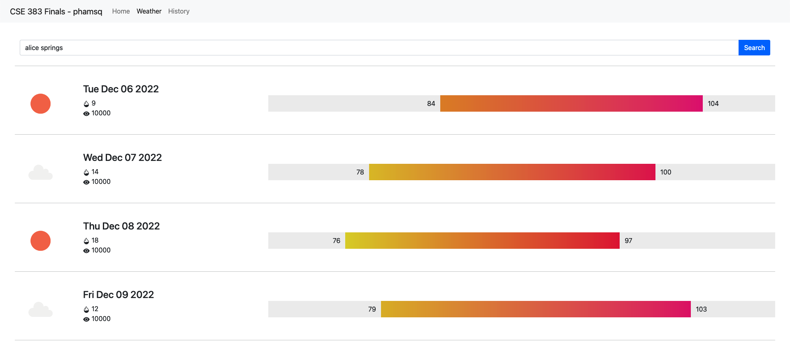

CSE 383 - Finals
December 4th, 2022, by Pendleton Pham - @phamsq
Because I have a few experiences working with Spring Boot and front-end, the conception and planning of the project was straightforward and a breeze. However, specific quirks of the language as well as weird problems and unfortunate oversights dragged the project on. For example, the fact that Ajax call are asynchronous, and that you must specifically order the call to be at execution moment, means that it’s incredibly hard to point out the bug, and it took a few hours to debug what is essentially a missing 'false' tag. All and all, it took around 8 hours to finish the project from start to finish.
All required functionalities are present and working in this project.
For weather, the API calls TomTom and gather the first result of fuzzy search for the longitude and latitude. JS then pass on the two parameters to OpenWeatherMap to get the next five days’ weather in 3 hour interval, along with pictures for the conditions. JS calculates the min-max temperature, its HSL color coordination, and its relative chart location for the next five days, then bulk-inject HTML code into the website. Finally, JS post the two JSON payloads to the REST server.
For history, the API calls the REST server for the inputted date, and prints out the entire list or the max number of lines, whichever is smaller. Each line has its own unique ID corresponding to the position of display on the list. When the “Show” button is pressed, another API call to the REST server is made, which shows the weather chart and parse only the selected weather.

And last but not least, please Microsoft Internship, let me be your little pogchamp!